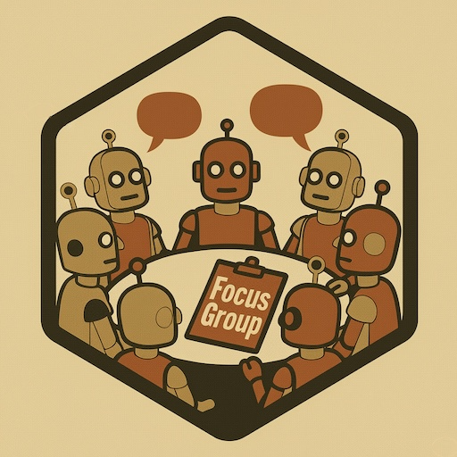

Overview
The FocusGroup package provides a comprehensive R6-based framework for simulating and analyzing focus group discussions using Large Language Models (LLMs). It enables researchers to create virtual focus groups with diverse AI agents, conduct structured discussions across multiple phases, and perform sophisticated analysis of the resulting conversations.
The package is designed with flexibility in mind, allowing users to define agent personas, manage conversation flow, and customize prompts for LLM interactions.
Key Features
-
Agent-Based Modeling: Create diverse AI participants and moderators (
FGAgentclass) with customizable personas derived from demographics, survey responses, or direct descriptions. Each agent can have its own LLM configuration. -
Flexible Conversation Flow: Implement various turn-taking mechanisms using the
ConversationFlowbase class and its implementations:-
RoundRobinFlow: Participants take turns in a fixed order. -
ProbabilisticFlow: Turn-taking based on dynamically adjusting propensity scores. -
DesireBasedFlow: LLM-rated “desire to talk” determines the next speaker.
-
-
Phase-Driven Simulations: The
FocusGroupclass orchestrates discussions through aquestion_scriptthat defines phases (e.g., Opening, Icebreaker, Engagement, Exploration, Closing) and moderator actions. -
Comprehensive Analysis: The
FocusGroupclass includes methods for basic conversation statistics, and theanalyze_focus_groupwrapper provides a higher-level interface for more detailed analyses (topic modeling, sentiment, TF-IDF, readability, thematic analysis). -
Customizable Prompts: Default prompts are provided (
get_default_prompt_templates()), but users can supply their own to tailor agent behavior. -
LLM Integration: Leverages the
LLMRpackage for robust interaction with various LLM providers.
Note
The package is experimental, with some rough edges. The intention is to keep the core of the two classes (FGAgent and FocusGroup) unchanged, but update the methods and functions that interact with them.
Installation
# Install from GitHub (replace with your actual repository if different)
# remotes::install_github("asanaei/FocusGroup")
# Or, if you have a local tar.gz file:
# install.packages("path/to/your/FocusGroupPackage_version.tar.gz", repos = NULL, type = "source")Dependencies
Ensure the following R packages are installed:
install.packages(c("R6", "LLMR", "dplyr", "tidyr", "ggplot2",
"quanteda", "quanteda.textstats", "topicmodels", "tidytext", "stringr"))You will also need to configure API keys for your chosen LLM provider (e.g., set OPENAI_API_KEY as an environment variable if using OpenAI via LLMR).
Quick Start
1. Simple Focus Group Simulation using run_focus_group
The run_focus_group function is a high-level wrapper to quickly set up and run a simulation.
library(FocusGroup)
library(LLMR) # For llm_config
# Ensure OPENAI_API_KEY is set in your environment
# Sys.setenv(OPENAI_API_KEY = "your-openai-api-key")
if (Sys.getenv("OPENAI_API_KEY") == "") {
stop("Please set your OPENAI_API_KEY environment variable.")
}
# Define LLM configuration for agents
llm_config_agents <- LLMR::llm_config(
provider = "openai",
model = "gpt-4o-mini", # Or your preferred model
temperature = 0.7,
max_tokens = 200
)
# Run a basic focus group
# `turns_per_phase` will generate a generic script structure.
# The moderator prompts will adapt to the topic and phase.
result <- run_focus_group(
topic = "The impact of remote work on team collaboration",
participants = 4,
turns_per_phase = c(Opening = 1, Icebreaker = 2, Engagement = 5, Exploration = 6, Closing = 1),
llm_config = llm_config_agents, # Used for all agents and admin tasks if not specified otherwise
seed = 123,
verbose = TRUE
)
# Access the conversation log
print("First 5 turns of the conversation:")
print(head(result$conversation, 5))
# View basic statistics
print("Basic conversation statistics:")
print(result$basic_stats$speaker_stats)
# View summary
print("Focus group summary:")
cat(result$summary)2. More Detailed Simulation Setup (using R6 classes directly)
For more control, you can instantiate the R6 classes directly.
library(FocusGroup)
library(LLMR)
# Sys.setenv(OPENAI_API_KEY = "your-openai-api-key") # Ensure API key is set
# a. Define LLM Configuration
llm_conf <- LLMR::llm_config(
provider = "openai",
model = "gpt-4o-mini",
temperature = 0.7
)
# b. Create Agents (using create_diverse_agents or manually)
# `create_diverse_agents` generates diverse demographics and basic personas.
# It also creates a moderator.
all_agents_list <- create_diverse_agents(
n_participants = 3,
llm_config = llm_conf
)
# The list needs to be named by agent ID for FocusGroup class
all_agents_named <- setNames(all_agents_list, sapply(all_agents_list, function(a) a$id))
moderator_id <- "MOD" # Default ID from create_diverse_agents
# c. Define a Custom Question Script
custom_script <- list(
list(phase = "opening"),
list(phase = "icebreaker_question", text = "What's one word that describes your ideal weekend?"),
list(phase = "engagement_question", text = "How do you typically spend your weekends?"),
list(phase = "exploration_question", text = "What makes a weekend truly relaxing or fulfilling for you?"),
list(phase = "closing")
)
# d. Choose a Conversation Flow
# desire_flow <- DesireBasedFlow$new(agents = all_agents_named, moderator_id = moderator_id)
round_robin_flow <- RoundRobinFlow$new(agents = all_agents_named, moderator_id = moderator_id)
# e. Create FocusGroup Object
fg_manual <- FocusGroup$new(
topic = "Weekend Preferences and Activities",
purpose = "To understand how people like to spend their weekends.",
agents = all_agents_named,
moderator_id = moderator_id,
turn_taking_flow = round_robin_flow, # Using round robin for this example
question_script = custom_script,
llm_config_admin = llm_conf # For summaries etc.
)
# f. Run Simulation
fg_manual$run_simulation(verbose = TRUE)
# g. Analyze
conversation_df_manual <- dplyr::bind_rows(lapply(fg_manual$conversation_log, as.data.frame))
print("Manually setup conversation (first 5 turns):")
print(head(conversation_df_manual, 5))
summary_manual <- fg_manual$summarize(summary_level = 1)
cat("\nSummary from manual setup:\n", summary_manual, "\n")Main Classes
FGAgent
Represents an individual participant or moderator. - Key Fields: id, persona_description, communication_style_instruction, model_config, is_moderator. - Key Methods: - initialize(id, agent_details, model_config, is_moderator): Creates an agent. agent_details can include direct_persona_description, demographics, survey_responses, communication_style. - generate_utterance(...): Generates text based on context and prompts. - get_need_to_talk(...): (Used by DesireBasedFlow) Queries LLM for agent’s desire to speak.
# Example FGAgent creation
participant_details <- list(
direct_persona_description = "A 35-year-old software engineer who enjoys hiking and is concerned about data privacy.",
communication_style = "analytical and tends to ask clarifying questions",
demographics = list(age = 35, occupation = "Software Engineer")
)
# llm_conf defined earlier
agent1 <- FGAgent$new(id = "P1", agent_details = participant_details, model_config = llm_conf)
FocusGroup
Manages the overall simulation, conversation flow, logging, and analysis. - Key Fields: topic, purpose, agents (named list), moderator_id, conversation_log, turn_taking_flow, question_script, prompt_templates. - Key Methods: - initialize(...): Sets up the focus group. - run_simulation(num_turns, verbose): Executes the simulation. - advance_turn(current_turn_number, verbose): Core logic for a single moderator-participant exchange. - summarize(summary_level, ...): Generates an LLM-based summary of the conversation. - analyze(): Provides basic conversation statistics. - analyze_topics(), analyze_tfidf(), analyze_readability(), analyze_themes(): Various detailed analysis methods. - Plotting methods like plot_participation_timeline(), plot_word_count_distribution(), etc.
ConversationFlow (and subclasses)
Defines how the next speaker is chosen. - Base class: ConversationFlow - Implementations: - RoundRobinFlow: Cycles through participants. - ProbabilisticFlow: Uses weighted probabilities based on speaking history and base propensities. - DesireBasedFlow: Uses LLM to assess each participant’s “desire to talk”. - Created via create_conversation_flow(mode, agents, moderator_id, flow_params) or by direct instantiation.
Advanced Usage: Working with Survey Data (e.g., ANES)
The package is designed to allow agent personas to be informed by survey data. The create_diverse_agents function (and by extension, run_focus_group) can accept demographics and survey_responses data frames.
Key Idea: If direct_persona_description is NOT provided in agent_details, FGAgent$new (via create_diverse_agents and its internal generate_persona function) should ideally be able to: 1. Use the demographics data frame for basic demographic facts. 2. Iterate through columns in the survey_responses data frame for a given agent. 3. For each survey variable (column): * Retrieve the question text (variable label from Haven attributes, e.g., attr(column, "label")). * Retrieve the textual representation of the coded answer (value label from Haven attributes, e.g., by using haven::as_factor() then as.character(), or by looking up attr(column, "labels")). * Incorporate this “Question: …, Answer: …” information into the persona_description passed to the LLM.
Customizing Prompts
You can tailor the LLM’s behavior by modifying the default prompt templates.
# Get the list of default prompts
default_prompts <- get_default_prompt_templates()
# Modify a specific prompt, e.g., for the moderator's opening
default_prompts$moderator_opening <- "Hello everyone, and a very warm welcome! Today we're diving into {{topic}}. Our goal is {{focus_group_purpose}}. Let's make this a great discussion."
# When creating your FocusGroup object:
# fg <- FocusGroup$new(
# ...,
# prompt_templates = default_prompts,
# ...
# )Analysis Capabilities
The FocusGroup class offers several built-in analysis methods: - analyze(): Basic statistics (turn counts, word counts). - analyze_topics(num_topics = 5, ...): LDA topic modeling. - analyze_tfidf(top_n_terms = 10, ...): Term Frequency-Inverse Document Frequency. - analyze_readability(measures = "Flesch", ...): Readability scores. - analyze_themes(...): LLM-assisted thematic analysis. - analyze_participation_balance(...), analyze_response_patterns(...), analyze_question_patterns(...), analyze_key_phrases(...): More specialized text and interaction analyses.
The analyze_focus_group() wrapper function provides a convenient way to run several of these analyses at once.
Visualizations
The FocusGroup class also includes plotting methods: - plot_participation_timeline() - plot_word_count_distribution() - plot_participation_by_agent() - plot_turn_length_timeline()
These are also accessible via the plots element in the output of analyze_focus_group().
Contributing
Contributions, bug reports, and feature requests are welcome! Please open an issue or submit a pull request on the GitHub repository.